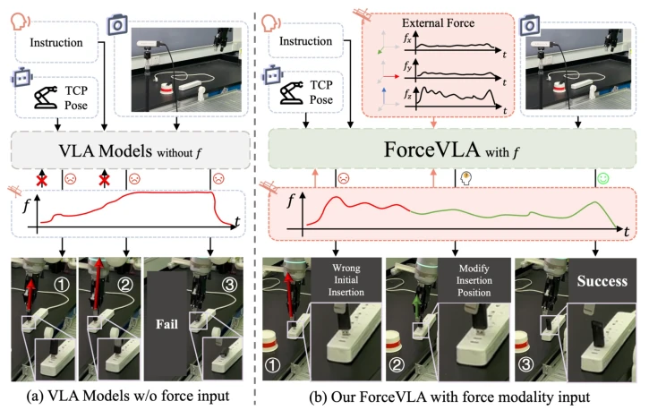
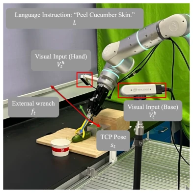
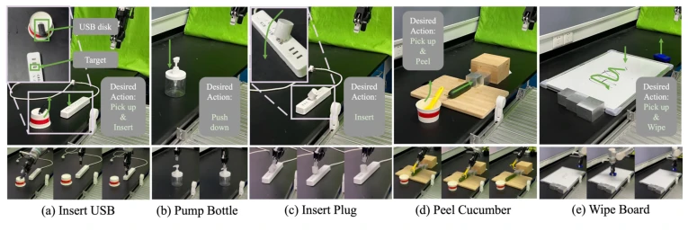
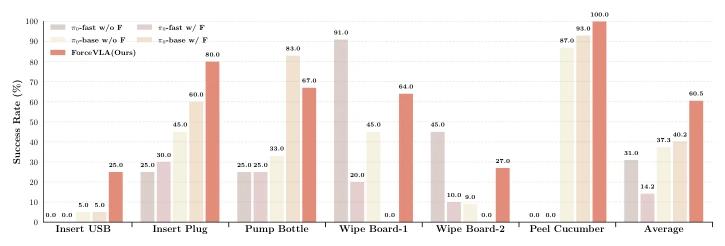
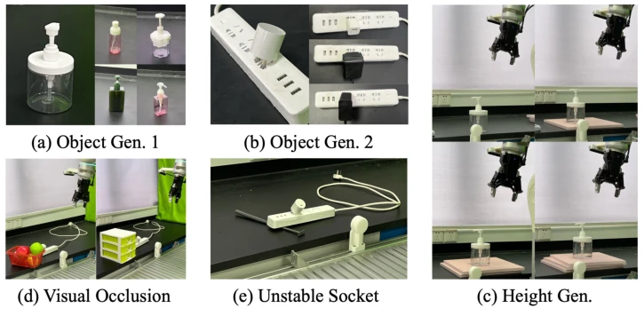
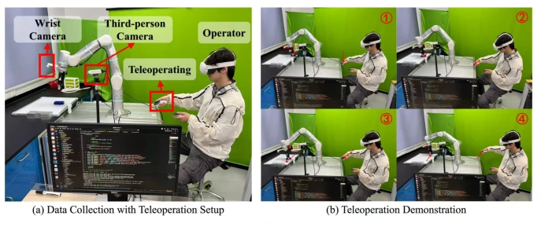

This paper forcibly equips Vision-Language-Action (VLA) models with "touch", attempting to solve the "blind men touching an elephant" problem in contact-based manipulation. The core innovation of ForceVLA is treating 6-axis force perception as a first-class modality, dynamically fusing visual, language, and force signals through the FVLMoE module. Although architecturally it is a "high-end renovation" based on π0, the effect is indeed significant, with the average success rate improved by 23.2%, reaching even 80% on plug-in tasks. However, the authors honestly admit limitations: relying on estimated external torque rather than high-precision sensors, and high data collection costs. The dataset has only 244 trajectories, which is somewhat thin for large-scale generalization, even feeling a bit like a "small workshop". But it cannot be denied that under visual occlusion or dynamic uncertainty, pure visual VLA tends to "crash hard", while ForceVLA can adjust strategies based on force feedback; the introduction of this "sense of touch" indeed makes robot control more physically intelligent. It counts as filling in a key piece of the puzzle for the VLA field, although this piece is currently quite expensive and has high hardware requirements, ordinary labs might not afford it, but this direction is indeed not off track.
Although Vision-Language-Action (VLA) models such as OpenVLA [9] and π0 [10] perform excellently in semantic understanding and zero-shot generalization, they appear powerless in contact-rich fine manipulation. Existing VLA mainly relies on visual and language cues, often ignoring force sensing as a key modality [12, 13]. Humans naturally integrate touch and proprioception to adjust strategies during manipulation [14], while VLA models, when facing tasks like plug-in or tool use, easily exhibit rigid behavior or task failure upon encountering visual occlusion or dynamic uncertainty. Furthermore, different task phases (such as fine grasping, controlled insertion) require different force modulation, and existing methods lack mechanisms to perceive and adapt to these dynamic changes. Although some works attempt to integrate force sensing [31, 32] or touch [36, 37], most are limited to static modality fusion, lacking dynamic routing or unified modeling frameworks, and rarely evaluate cross-task generalization capabilities. Therefore, how to effectively integrate force perception as a first-class modality into VLA systems to achieve context-aware action generation has become a key bottleneck in improving physical intelligence.

Figure 1: Comparison between ForceVLA and baselines without force input. Without force feedback, the policy fails to correct pose errors and completes insertion incorrectly. In contrast, ForceVLA leverages external force signals to adjust insertion strategies dynamically, leading to successful execution despite initial misalignment.
ForceVLA is an end-to-end policy framework built upon the conditional flow matching architecture of π0 [10]. The overall process is: multi-view RGB images and language instructions are encoded into context embeddings via a SigLIP-based VLM; proprioceptive states and 6-axis torque signals are projected as tokens; the key innovation lies in the FVLMoE module. This module adopts a "late fusion" strategy, i.e., integrating force tokens after the VLM completes visual-language encoding. This avoids early fusion disrupting the feature distribution of the pre-trained VLM. FVLMoE internally contains 4 expert sub-networks and a gating network, dynamically routing based on input (Top-K=1), achieving modality and phase-aware fusion. The fused features are injected into the Flow Head for action generation via residual connections, guiding the denoising process to generate action chunks. This design allows the model to adaptively activate different experts based on contact dynamics, capturing subtle force feedback changes. Additionally, the authors constructed the ForceVLA-Data dataset, containing 244 trajectories, covering 5 types of tasks such as plug-in and peeling, ensuring temporal synchronization of visual, proprioceptive, and force signals, providing a solid foundation for training.

Figure 2: Robot manipulation tasks setting.Figure 3: Overview of our ForceVLA model. Visual and language inputs are processed by a pre- trained VLM to form contextual embeddings. External force signals are projected and fused with VLM outputs via the FVLMoE module. The resulting multimodal features guide a flow-based action head to generate contact-aware robot actions.
Experiments were conducted on 5 contact-rich tasks: USB plug-in, plug socket, pump bottle, whiteboard wiping, cucumber peeling. Baselines include variants of π0-base and π0-fast with and without force input. The main metric is task success rate. ForceVLA average success rate 60.5%, an improvement of 23.2% compared to force-less π0-base, reaching 80% on the plug socket task. In the peeling task, ForceVLA has longer average peeling length and fewer times. Generalization tests show that under object geometric changes, visual occlusion, and unstable socket conditions, ForceVLA performs more robustly, especially achieving 90% success rate under visual occlusion. Ablation studies show that early fusion (e.g., force input before VLM) leads to performance degradation or even failure (0%), while late fusion (concatenate after VLM) is effective, but FVLMoE's dynamic routing further improves performance. This proves the importance of the timing of force perception introduction and the fusion mechanism.

Figure 4: Overview of task setups used in evaluation. (a) Insert USB, (b) pump bottle, (c) insert plug, (d) peel cucumber, and (e) wipe board. These tasks span diverse contact dynamics and manipulation skills, from precise insertions to tool-mediated surface interactions.

Figure 5: Main task success rates across different methods. ForceVLA significantly outperforms all baselines on five contact-rich tasks. Incorporating external force feedback improves performance for π0-base model, while our method achieves the highest average success rate, demonstrating robust performance under complex interaction dynamics. “Wipe Board-1” indicates the success rate of successfully performing the wiping motion, while “Wipe Board-2” refers to the success rate of completely erasing the markings.

Figure 6: Variants of generalization settings used in our experiments. (a–b) Different object geome- tries; (c) variation in socket height; (d) partial visual occlusion; (e) unstable socket conditions. These scenarios evaluate robustness under diverse physical and perceptual perturbations.Figure 7: Trajectory visualizations across tasks and conditions. (a) USB insertion, (b) bottle pumping, and (c) plug insertion under stable and unstable socket conditions. Each sequence illustrates how ForceVLA adapts its actions in response to contact dynamics, retrying or adjusting pose when failures occur, ultimately achieving successful task completion.
其他图片Other Figures

Figure 8: Our data collection system setup.Figure 9: Open-loop evaluation of expert load across different task completion percentages for various tasks: (a) Pump Bottle, (b) Insert Plug, (c) Wipe Board, (d) Peel Cucumber, and (e) Insert USB. Each subplot represents the average expert load (vertical axis) as a function of the task completion percentage (horizontal axis) over the episodes in the test dataset.Figure 10: Key frames from Pump Bottle task videos.